6 ta konsepsiya · har biri oq va to'q fon uchun · SVG (vektor) + PNG
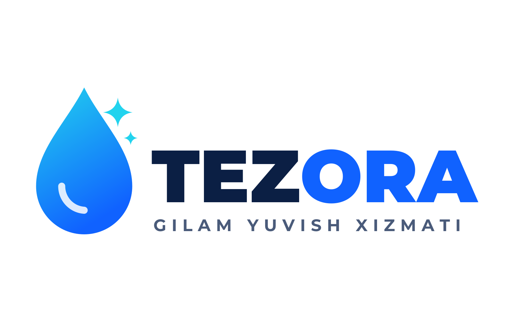
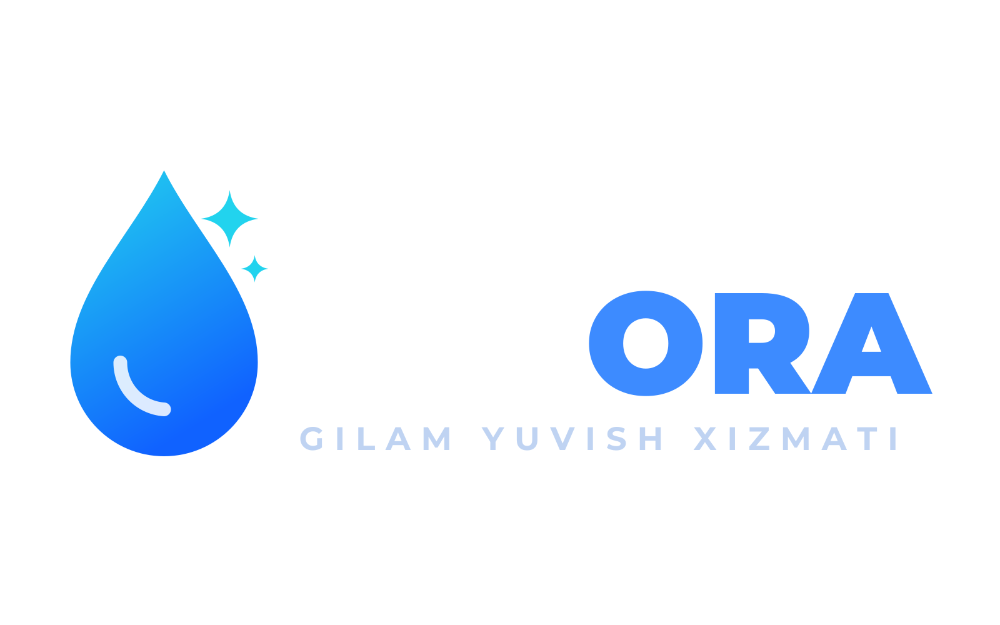
Klassik suv tomchisi — eng universal variant
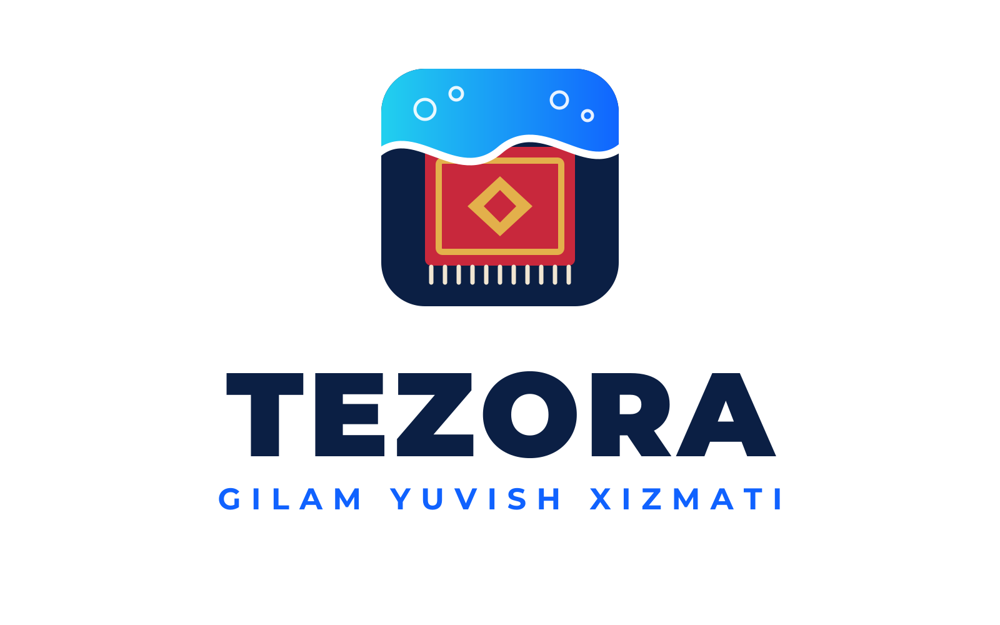
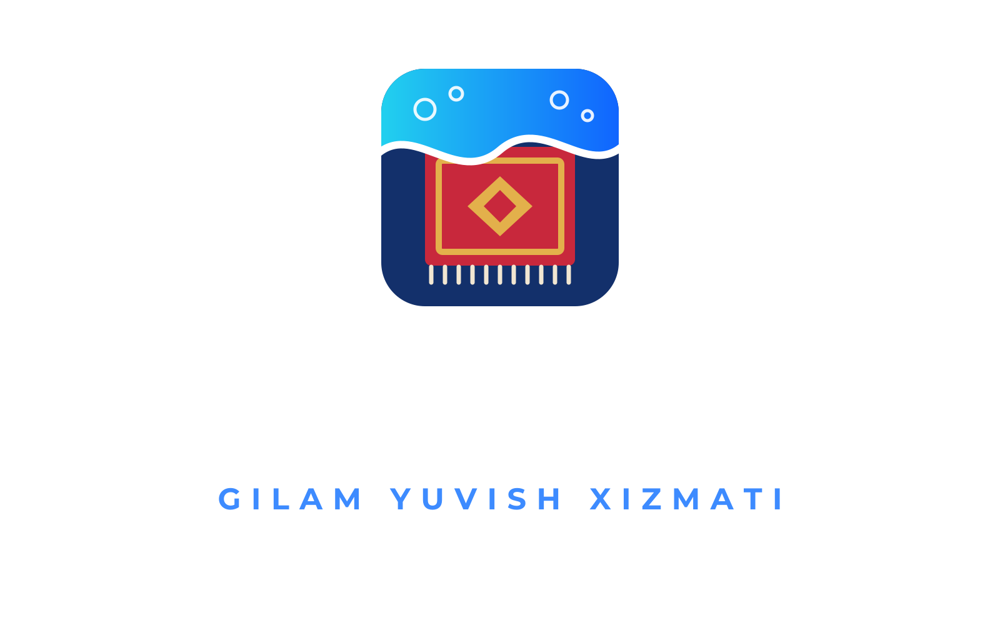
Gilam + yuvuvchi to'lqin — xizmat darrov tushunarli
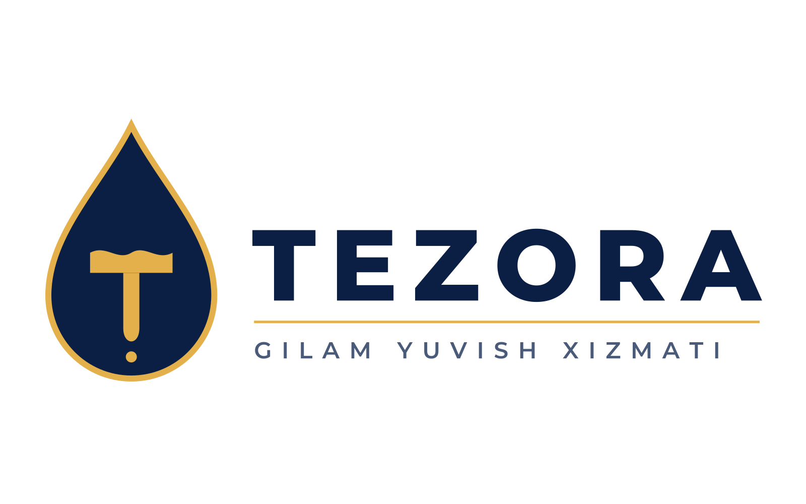
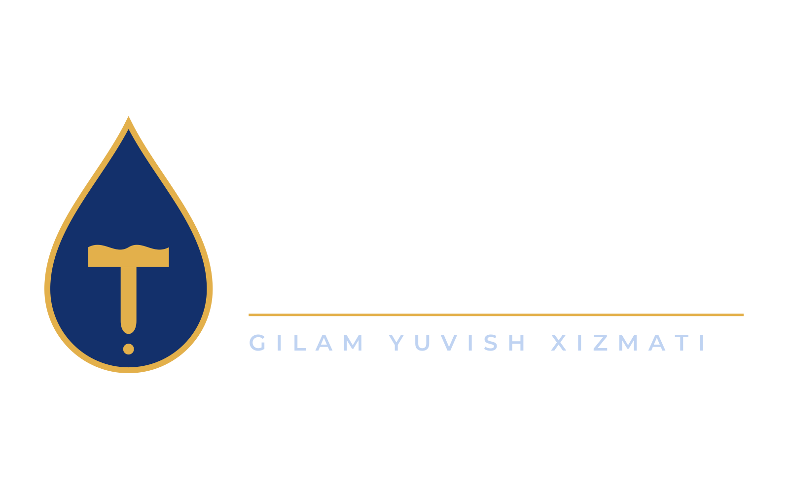
Tomchi ichida suv «T» — premium, oltin rang
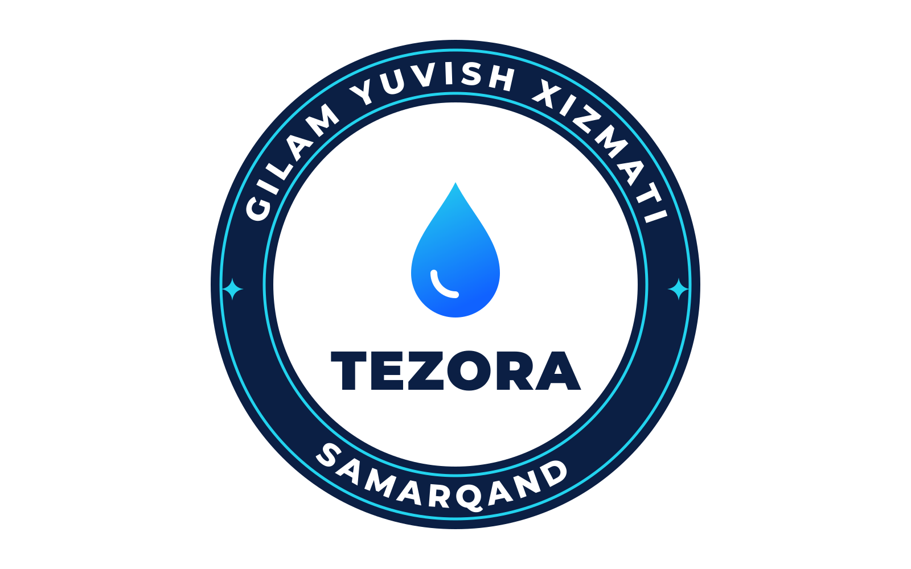
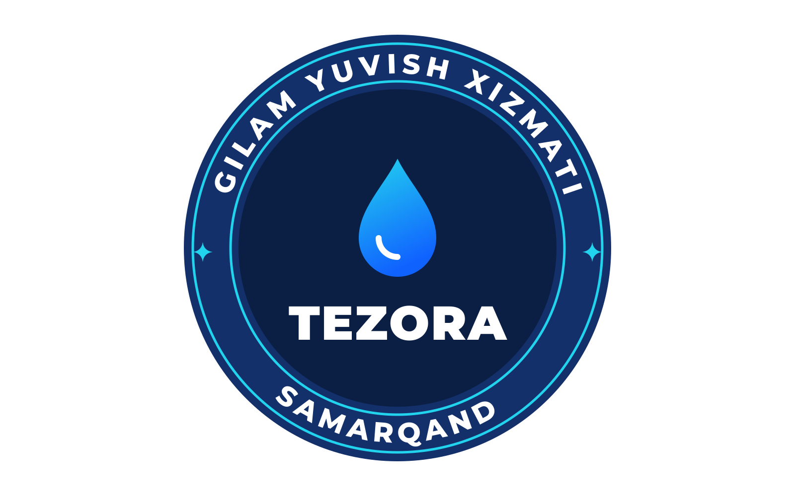
Dumaloq nishon — forma, stiker, avatar uchun
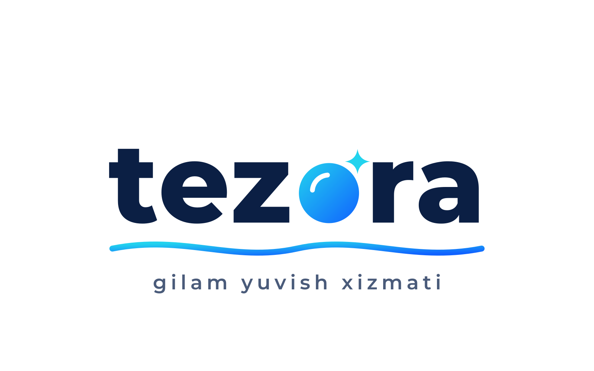
«o» — sovun pufakchasi, zamonaviy uslub
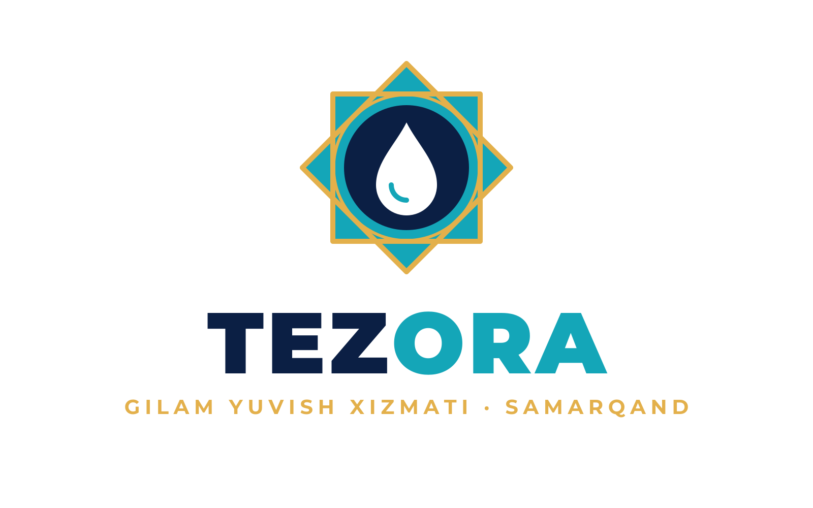
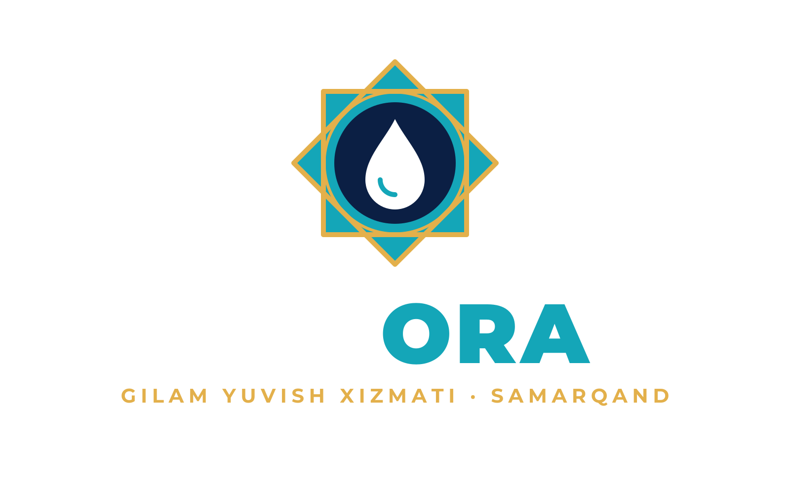
Girih yulduz, firuza va oltin — milliy brend